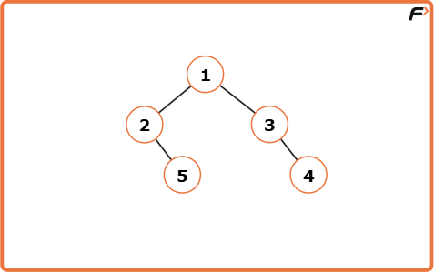
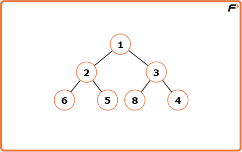
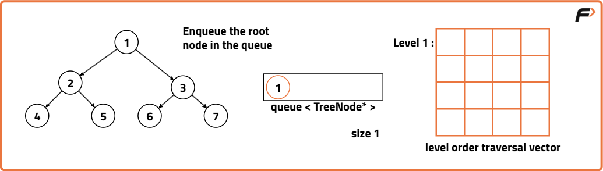
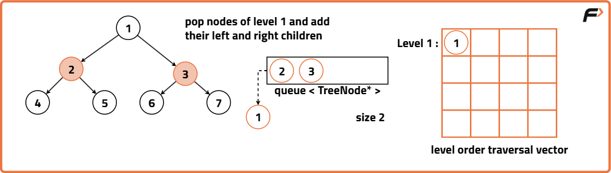
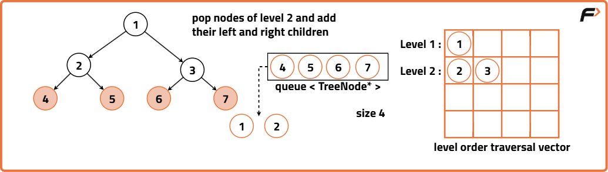
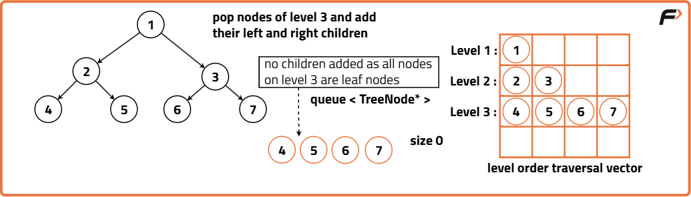
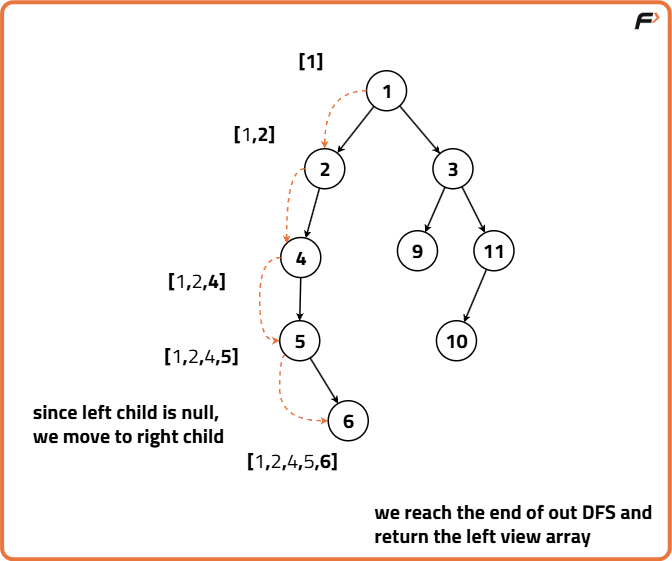
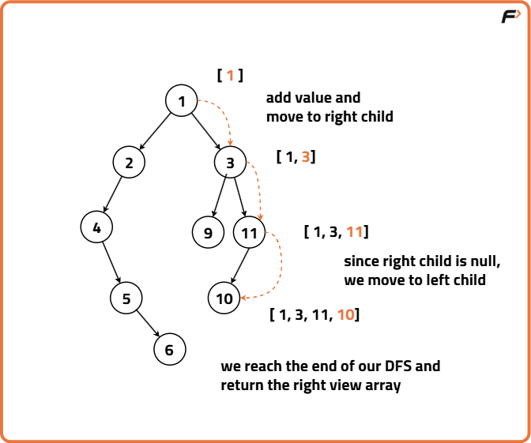

Right/Left view of binary tree
Problem Statement: Assuming standing on the right side of a binary tree and given its root, return the values of the nodes visible, arranged from top to bottom.
Examples
Input : root = [1, 2, 3, null, 5, null, 4] Output :[1, 3, 4] Explanation :

Input :root = [1, 2, 3, 6, 5, 8, 4] Output : [1, 3, 4] Explanation :
Disclaimer: Here is the practice link to help you assess your knowledge better. It's highly recommend trying to solve it before looking at the solution.
Brute Force Approach
Algorithm
- Initialise an empty queue data structure to store the nodes during traversal. Create a 2D array or a vector of vectors to store the level order traversal. If the tree is empty, return this empty 2D vector.
- Enqueue the root node i.e., add the root node of the binary tree to the queue.
- Iterate until the queue is empty:
- Get the current size of the queue. This size indicates the number of nodes at the current level.
- Create a vector ‘level’ to store the nodes at the current level.
- Iterate through ‘size’ number of nodes at the current level:
- Pop the front node from the queue.
- Store the node’s value in the level vector.
- Enqueue the left and right child nodes of the current node (if they exist) into the queue.
- After processing all the nodes at the current level, add the ‘level’ vector to the ‘ans’ 2D vector, representing the current level.
- Once the traversal loop completes, the 'ans' 2D vector now contains the level order traversal of the binary tree. To obtain the left view and right view we use each level's vector in the 'ans' vector.
- Left View: For each level, extract the first element from the vector and store it in a separate array. Return this array as the final left view of the binary tree.
- Right View: For each level, extract the last element from the vector and store it in a separate array. Return this array as the final right view of the binary tree.




Code
#include <bits/stdc++.h>
using namespace std;
// Structure for a binary tree node
struct Node {
int data;
Node* left;
Node* right;
Node(int val) {
data = val;
left = right = NULL;
}
};
class Solution {
public:
// Function to return level order traversal
vector<vector<int>> levelOrder(Node* root) {
// Initialize the final 2D vector
vector<vector<int>> ans;
// If the tree is empty, return empty vector
if (!root) return ans;
// Create a queue to hold tree nodes
queue<Node*> q;
// Start with the root node
q.push(root);
// Loop until queue is empty
while (!q.empty()) {
// Get the number of nodes at the current level
int size = q.size();
// Vector to store current level nodes
vector<int> level;
// Process all nodes at the current level
for (int i = 0; i < size; i++) {
// Get the front node from the queue
Node* node = q.front();
q.pop();
// Add its data to the level vector
level.push_back(node->data);
// Enqueue left child if exists
if (node->left) q.push(node->left);
// Enqueue right child if exists
if (node->right) q.push(node->right);
}
// Add current level to the answer
ans.push_back(level);
}
return ans;
}
// Function to return the left view
vector<int> leftView(Node* root) {
// Get the level order traversal
vector<vector<int>> levels = levelOrder(root);
// Vector to store left view
vector<int> left;
// Pick first element of each level
for (auto& level : levels) {
left.push_back(level[0]);
}
return left;
}
// Function to return the right view
vector<int> rightView(Node* root) {
// Get the level order traversal
vector<vector<int>> levels = levelOrder(root);
// Vector to store right view
vector<int> right;
// Pick last element of each level
for (auto& level : levels) {
right.push_back(level.back());
}
return right;
}
};
// Driver code
int main() {
// Manually create the binary tree
Node* root = new Node(1);
root->left = new Node(2);
root->right = new Node(3);
root->left->left = new Node(4);
root->right->right = new Node(5);
Solution obj;
// Get level order traversal
vector<vector<int>> levelOrder = obj.levelOrder(root);
cout << "Level Order Traversal:\n";
for (auto& level : levelOrder) {
for (int val : level) cout << val << " ";
cout << "\n";
}
// Get left view
vector<int> left = obj.leftView(root);
cout << "Left View: ";
for (int val : left) cout << val << " ";
cout << "\n";
// Get right view
vector<int> right = obj.rightView(root);
cout << "Right View: ";
for (int val : right) cout << val << " ";
cout << "\n";
return 0;
}
Complexity Analysis
Time Complexity: O(N) where N is the number of nodes in the binary tree. Each node of the binary tree is enqueued and dequeued exactly once, hence all nodes need to be processed and visited. Processing each node takes constant time operations which contributes to the overall linear time complexity.
Space Complexity : O(N) where N is the number of nodes in the binary tree. In the worst case, the queue has to hold all the nodes of the last level of the binary tree, the last level could at most hold N/2 nodes hence the space complexity of the queue is proportional to O(N). The resultant vector answer also stores the values of the nodes level by level and hence contains all the nodes of the tree contributing to O(N) space as well.
Optimal Approach
Algorithm
Algorithm for Left View
- Initialise an empty vector `res` to store the left view nodes.
- Implement a recursive depth-first traversal of the binary tree.
- Base Case: Check if the current node is null. If true, return the function as we have reached the end of that particular vertical level.
- Recursive Function: The recursive function takes as arguments the current node of the Binary Tree, its current level, and the result vector.
- Check if the size of the result vector is equal to the current level.
- If true, it means that we have not yet encountered any node at this level in the result vector. Add the value of the current node to the result vector.
- Recursively call the function for the current node’s left child, then right child, with an increased level (level + 1).
- We call the left child first as we want to traverse the left-most nodes. If there is no left child, the recursion backtracks and explores the right child.
- The recursion continues until it reaches the base case. Return the result vector at the end.
Algorithm for Right View
- Initialise an empty vector `res` to store the right view nodes.
- Implement a recursive depth-first traversal of the binary tree.
- Base Case: Check if the current node is null. If true, return the function as we have reached the end of that particular vertical level.
- Recursive Function: The recursive function takes as arguments the current node of the Binary Tree, its current level, and the result vector.
- Check if the size of the result vector is equal to the current level.
- If true, it means that we have not yet encountered any node at this level in the result vector. Add the value of the current node to the result vector.
- Recursively call the function for the current node’s right child, then left child, with an increased level (level + 1).
- We call the right child first as we want to traverse the right-most nodes. If there is no right child, the recursion backtracks and explores the left child.
- The recursion continues until it reaches the base case. Return the result vector at the end.


Code
#include <bits/stdc++.h>
using namespace std;
// TreeNode definition
struct TreeNode {
int val;
TreeNode* left;
TreeNode* right;
TreeNode(int v) : val(v), left(NULL), right(NULL) {}
};
class Solution {
public:
// Recursive function to get left view
void leftDFS(TreeNode* node, int level, vector<int>& res) {
// Base case: null node
if (!node) return;
// If this is the first node at the current level
if (res.size() == level)
res.push_back(node->val);
// Explore left subtree first
leftDFS(node->left, level + 1, res);
// Then explore right subtree
leftDFS(node->right, level + 1, res);
}
// Recursive function to get right view
void rightDFS(TreeNode* node, int level, vector<int>& res) {
if (!node) return;
if (res.size() == level)
res.push_back(node->val);
// Explore right subtree first
rightDFS(node->right, level + 1, res);
// Then explore left subtree
rightDFS(node->left, level + 1, res);
}
vector<int> leftView(TreeNode* root) {
vector<int> res;
leftDFS(root, 0, res);
return res;
}
vector<int> rightView(TreeNode* root) {
vector<int> res;
rightDFS(root, 0, res);
return res;
}
};
// Driver code
int main() {
TreeNode* root = new TreeNode(1);
root->left = new TreeNode(2);
root->right = new TreeNode(3);
root->left->right = new TreeNode(4);
root->left->right->right = new TreeNode(5);
root->left->right->right->right = new TreeNode(6);
Solution sol;
vector<int> left = sol.leftView(root);
vector<int> right = sol.rightView(root);
cout << "Left View: ";
for (int val : left) cout << val << " ";
cout << "\nRight View: ";
for (int val : right) cout << val << " ";
return 0;
}
Complexity Analysis
Time Complexity: O(N) In the worst case, we may visit every node in the binary tree exactly once. This happens when the tree is skewed (i.e., every node has only one child), effectively forming a linear structure. Hence, the time complexity becomes O(N), where N is the total number of nodes in the tree.
Space Complexity: O(H),The space complexity depends on the height (H) of the binary tree due to the recursion stack in depth-first traversal (like preorder, inorder, postorder). In a balanced binary tree, the height is log₂N, leading to O(log N) space. However, in the worst case (a skewed tree), the height is N, resulting in O(N) space. So the space complexity is O(H), where H is the height of the tree.